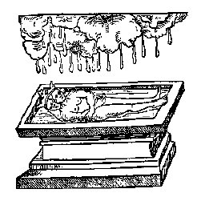
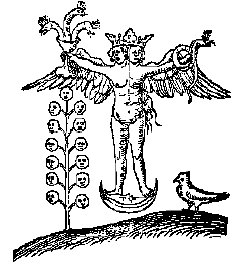
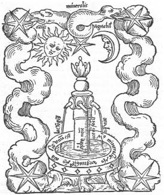
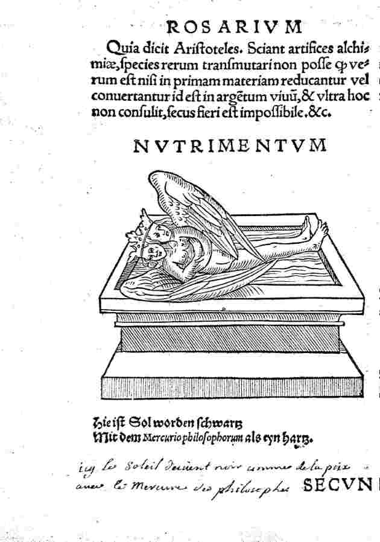

Si
nous avons donné ce large extrait, c'est pour faire voir que les
Anciens pouvaient avoir le sentiment d'opérer de pseudo
transmutations. En effet, si ces opérations sont à
présent des exerices d'école, tel n'était point le
cas jadis et sous le rapport historique, il est un point remarquable :
que cette mine de zinc pouvait donner l'illusion de se transformer en
fer ou en orichalque que l'on ne distinguait pas réellement du
laiton, du cuivre ou de l'airain. ]
Le
bismuth, d’autre part, n’est pas aussi fusible par le feu -
telle est
sa
grossièreté terreuse et impureté.
L’antimoine, de
nouveau, peut être purgé par un processus chimique et
réduit à un régule très blanc et beau [
cf.
Char Triomphal de
l'antimoine].
Comme nous le regardons dans cet état épuré, il
semble difficile de croire qu’il ne peut pas être
transformé en quelque chose de glorieux. De là il est
naturel que quelques personnes vaniteuses aient pu supposer que la
Pierre peut en être préparée. Mais cependant
quelque soit la quantité d'antimoine purgée de sa
noirceur, elle conserve toujours sa grossièreté,
dureté et des
propriétés sulfureuses ; elle ne peut jamais devenir
malléable (comme les métaux) et donc, malgré ses
nombreuses propriétés, elle ne peut pas être
considérée comme un métal. De plus, son mercure
est brut et impur ; et son soufre est combustible. Vous, alors, qui
seriez
de grands philosophes, en tromperiez plusieurs avec vos
écrits érudits, dans lesquels vous mettrez ce
minéral en avant comme l’essence de la panacée
universelle - je
vous demande à maintes reprises de reconsidérer votre
avis et marquer l’énonciation d’Arnaud, en cela
«
il est
idiot de chercher dans une chose ce qu’elle ne contient pas
. »
Il dit aussi, dans son Commentaire de «
la Turba
»
:
« la pierre du
philosophe est une substance pure. » De
nouveau, Lulle dans son «
Dernier Testament,
» [
Lullij ultimum
Testamentum, in Artis Auriferae]
observe :
«
notre teinture
n’est
rien que le feu pur. » Il y a une
expression au même effet dans son «
Vade Mecum
» :
«
c’est un esprit
subtil qui teint les corps et les nettoie de
leurs infirmités lépreuses. » [
le Vade Mecum de Lulle peut être
consulté dans : Liber
Artis Compendiosæ quem Vademecum nuncupavit, Bibliotheca
Chemica Curiosa, I, p. 849 ; Codicillus, seu Vademecum & Cantilena
in quo fontes Alchemicae
Artis
ac Philosophiæ reconditioris uberrime traduntur, idem, p.
880 ; De
Tincturis compendium, seu Vade Mecum. De
Alchimia Opuscula Complura, i, f. 153 ]

l'ablution ou mondification
[Rosarium - cliquez pour agrandir]
Mais ce
minéral (comme tout le reste, sans une exception simple) est si
brut et impur que l’on ne peut seulement le nettoyer par la
médiation [
ce mot est important : on traduit
improprement dans la Tabula Smaragdina «
meditatione » là où il faut lire « mediatione
»] de notre teinture. Donc, la substance
de notre Grande
Pierre ne peut pas en être mise à jour, depuis que
(Richard, chapitre I) Rien ne peut être obtenu d’un corps
qui
n’existe pas auparavant dedans. Que dirons-nous du vitriol,
lequel
à induit en erreur plusieurs par ses merveilleuses
qualités, d’autant plus qu’une certaine partie de
lui change en
cuivre et lui-même a le pouvoir de transformer les autres en
cuivre ? En fait, c’est la substance élémentaire du
cuivre [
il s'agit alors du vitriol bleu, cf. chimie et alchimie]
et quand cette vapeur minérale (ou le mercure
aérien) trouve dans les veines minérales de la terre une
place où son amer, acide, salé, et vénéneux
soufre ment caché, il amalgame immédiatement avec cela
dans un métal. Mais puisque la quantité du soufre
sus-mentionné excède énormément celle du
mercure, quand le pur est séparé de l’impur et le
combustible de l’incombustible par la séparation de
Nature, le
mercure lui-même est changé dans une substance
inférieure verdâtre. Quand le soufre commun est
ajouté au cuivre et le tout introduit en contact avec le feu
(donc l’art peut par la chaleur intense en quelques moments faire
ce
qui prend à la chaleur douce de Nature une longue période
de temps pour l’accomplir) il corrode le cuivre et le change en
vitriol
et, selon la proportion de la quantité de soufre, le vitriol
assume une couleur plus riche ou plus faible ; d’où il
vient
qu’un peu de vitriol contient plus de cuivre et un peu moins.
Dans le
fer, aussi, il y a le soufre brut; de là il est corrodé
par le vitriol qui cherche son mercure (le mercure de fer étant
très semblable du vitriol) et (le mercure étant joint au
soufre) le fer devient le cuivre pur. [
un
chimiste moderne serait peut-être tenté d'écrire
que le vitriol cherche sa base, de façon à créer
un sel ; le mot base ne pourrait-il être mis pour Mercure ?]
On devrait soigneusement remarquer que l’esprit acide du vitriol
est
produit du soufre ; car l’odeur du soufre est perçu dans
l’esprit du vitriol et l’esprit du soufre, comme
l’esprit du vitriol, a
la puissance de changer en vitriol. Depuis, alors, ce soufre corrosif
est caché dans le vitriol et puisqu’il contient une si
petite
quantité de mercure impur, nous pouvons être sûrs
qu’il ne peut pas être l’objet de notre recherche.
Dans cela nous
sommes d’accord avec Alphidius,
[1,
2,
3,
4, 5,
6,
7, 8,
9, 10,
11, 12.
Alphidius est supposé avoir vécu au XIIe
siècle et
un traité, qui lui est attribué, est imprimé dans
le Trinum Chymicum, à côté d'un autre de Koffsky et
d'un troisième de Lulle, Strasburg, 1699. On lui attribue un
autre écrit : Claves quinque
et alia fragmenta de lapide philosophico componendo resté
non imprimé, cf. Kopp, Die
Alchemie, 1886, ii, pp. 339, 363]
qui dit :
«
tenez compte, mon
fils et évitez les cadavres et les pierres ; dans aucune de ces
choses n’est la vraie voie de la procédure, car leur vie
ne conserve pas, mais détruit. Tel sont les sels, orpiments,
arsenic, magnésie, bismuth, tutie, et autres de ce genre
»
Et Arnaud (
Flos
Florum) dit :
«
la raison de ces
erreurs est que les quatre esprits, c’est à dire
d’orpiment, le
sel d’ammoniac, le mercure et le soufre, ne sont pas la graine
des
métaux parfaits ou imparfaits (sauf, bien sûr, le mercure
et le soufre d’eux). » [
sur
la Flos Florum, cf. supra.
Naturellement, il s'agit de propos envieux : l'orpiment
représente le Sel ou Arsenic de Geber - nous ne parlons pas de
Djabir - ; le sel d'ammoniac est le sel d'Ammon, c'est-à-dire un
silicate ; le mercure est le dissolvant et le soufre est la teinture de
la Pierre.]
Mais de ces derniers mots d’Arnaud il pourrait être
déduit
que le mercure commun et le vif-argent sont la substance de la pierre,
voyant que ceux-ci sont attribués aux quatre esprits et que le
soufre est supposé consolider le mercure. Mais je
réponds, avec Richard l’Anglais, dans son onzième
chapitre, [
Libellus utilissimus,
Cui titulum fecit Correctorium. Cap XI. De Differentia sulphuris vulgi, &
philosophorum simplicis non adurentis, cf. supra]
qu’il ne fait pas vraiment ainsi. Car chaque sorte de soufre
commun est répugnant aux métaux, comme le Sage dit :
«
en effet vous devez
savoir que le soufre provient de la graisse de terre et qu'il est est
épaissi dans le minéral
par la chaleur douce ; quand cela devient dur il est appelé le
soufre. »
Comprenez qu'il y a deux sortes de soufre, le vivant et le combustible.
Le soufre animé est le principe actif des métaux et,
quand il
est purgé de toute matière étrangère, il
constitue
la Matière de notre Pierre. Mais la variété
combustible commune n’est pas la Matière des métaux
ou de
notre Pierre ; c’est une idée fausse. Le soufre commun,
combustible - comme Avicenne nous le dit ainsi que Richard
l’Anglais -
n’a aucun rapport avec notre art. [
l'auteur
reproduit presque textuellement le
chapitre XI du Libellus de
Richard l'Anglais, p. 270 du vol. II de la Bibliotheca Chemica Curiosa]
Cependant soigneusement
préparé, il désagrège et détruit
tous les métaux, parce qu’il n’a aucune
affinité avec
eux. Quand il est joint avec les métaux, il retarde leur fusion.
On le voit clairement dans le cas du fer, qui contient le soufre dur,
brut et impur. Quand ce soufre est brûlé ce n’est
rien
qu’une substance morte, terreuse, pulvérulente. [
il
s'agit pourtant de la CALX hermétique correspondant au
métal ouvert] Comment alors
peut-il communiquer la vie à d’autres choses ? Il a deux
principes de décrépitude - son
inflammabilité et son impureté terreuse. Le soufre des
Sages, et d’autre part, vit dans le feu ; Il s'anime,
et mûrit des substances sans vie. Le
soufre commun, de toute évidence, ne peut pas être la
substance de la Pierre.
Mais que déduirons-nous concernant le mercure commun ? Les Sages
nous disent que la matière de notre Pierre est une
substance animée et que nombre de ses qualités
ressemblent beaucoup
à celles du mercure vulgaire. Car c’est la substance
élémentaire de tous les minéraux fusibles, comme
Arnaud dit (
Rosaire,
Chapitre II, point I) :
«
Parce que que toutes
les substances fusibles, quand elles sont fondues, sont changées
en cette substance élémentaire et
s'y mêlent en vertu de leur origine commune : elles
peuvent en différer seulement dans la mesure où cette
substance [fusible] contient un soufre étranger impur. »
[
nous avons modifié la traduction,
totalement incompréhensible auparavant. Cet extrait semble avoir
été tiré du Thesaurus
Thesaurorum & Rosarium
Philosophorum, figurant dans la Bibliotheca Chemica Curiosa, qui
contient trois livres, vol. I, pp. 662-675]
Et, de nouveau
(chapitre IV) :
«
Le mercure
animé est assurément le plus
parfait, et cela est prouvé dans toutes ses opérations,
puisqu’il sauve de la combustion et permet la fusion. C’est
la
teinture rouge, la somme de perfection, et rapide comme la foudre ; Non
plus s’il n’est coupé d’avec quoi il
s’est mélangé
aussi longtemps qu’il existe. Le semblable est plein
d’affinité,
fendant fidèlement, et est le médiateur par lequel les
teintures sont unies, car cela se mélange le plus intimement
avec eux, pénétrant naturellement dans leur partie la
plus secrète, car de même nature. Nous imitons en tous
poins la Nature, qui dans son athanor minéral travaille, sans
aucune
autre matière exceptée une pure forme mercurielle.
C’est
la seule chose qui surmonte le feu et n’est pas surmontée
par
lui, mais enchante par sa chaleur immédiate.
» [
apologie
du Mercure qui permet de joindre les deux extrémités du
vaisseau de nature ; rappelons que la Nature travaille par la voie
humide, cf. chimie et alchimie et
travaux de Gabriel auguste
Daubrée]
Ensuite, Bernard
dit
«
Dans ce mercure est
inclus le soufre essentiel, celui que
le feu ne peut toucher ; et il accomplit notre objet sans aucune autre
substance que celle d’un mercure pur. » [
l'expression
« soufre essentiel » se rencontre dans la Nature
Dévoilée - Aurea Catena Homeri - datant de 1723. Il
s'agit là en fait du Soufre principe, quintessencé, dont
le feu secret, notre dissolvant, sert de véhicule et qui est
l'objet de l'axiome de la Chrysopée de Cléopâtre.
Nous n'avons pu identifier ce passage dans les oeuvres de Bernard Le
Trévisan mais, au reste, rien de nouveau n'est dit.]
Voyant, alors, que le
mercure a de telles propriétés excellentes, cela doit
sûrement être la substance de notre Pierre ? Vrai ; mais
comme il y a deux sortes de soufre, ainsi il y a deux sortes de
mercure, le mercure commun et le mercure des Sages. Le mercure commun
est brut et grossier ; il ne supporte non plus l’essai du feu
comme
notre mercure, mais est dissipé en forme de fumée,
même par une chaleur douce. De là les Sages ont
fixé cette règle : «
notre mercure n’est pas le
mercure du vulgaire. » Ainsi Lulle dit (
Clavicula
:
chapitre I) :
«
le mercure commun,
cependant soigneusement
préparé, ne peut jamais devenir le mercure des Sages, car
le mercure commun ne peut seulement supporter l’essai du feu que
par
l’aide d’un certain autre mercure sec et plus fortement
digéré. » [
nous
avons cependant montré toute l'ambiguité qui marquait
l'emploi de l'expression « mercure commun ». Car, si le
vif-argent vulgaire ne sert à rien dans l'oeuvre, en revanche le
premier Mercure est souvent appelé dans les textes Mercure
commun : il s'agit alors du Mercure des Philosophes. La Clavicule de Lulle peut être
lue dans : Theatrum Cemicum, vol. III, p. 295 ; Bibliotheca Chemica
Curiosa, vol. I, p. 872]
Mais la plupart des étudiants de
cet art ont beaucoup parlé de la sublimation du mercure commun
et ont persisté dans la recherche du trésor de la sagesse
terrestre où il ne peut pas être trouvé, parce que
Nature ne l’a pas placé là. Et, vraiment, le
travail
même du mercure commun est si merveilleux qu’il a induit en
erreur certains qui ont supposé qu’ils étaient
connaisseurs en cet art. [
cf. Huginus à Barma sur des
commentaires sur le mercure et ses sels] La
chose suivante est un exemple. Je
connaissais un homme qui a réussi à procurer à son
amalgame la couleur orange, mais il ne pouvait pas obtenir la couleur
de l'or. Enfin ce chimiste
intelligent a décidé d’augmenter la chaleur du
four,
pensant que cela aurait l’effet désirable de combiner plus
intimement les ingrédients. Mais hélas ! L’alambic
éclata, l’or fut projeté dans le feu, et presque
entièrement changé de sa nature par le mercure toujours
volatil. il apparut que le mercure (qui est son corps) a si fortement
affecté l’or dans ses moindres particules qu’il
l’a
réduit en une teinture, bien que plusieurs couleurs aient
été obtenues par l’action de la chaleur sur la
masse
fondue. Si ce bon homme avait eu à cœur les mots
d’Arnaud dans
"
Flos Florum,"
il n’aurait jamais fait cette
expérience.
Car Arnaud fait référence à ceux qui adoptent
cette méthode dans les termes suivants :
«
ils savaient
que le mercure est le principe élémentaire des
métaux et qu’ils sont produits à travers sa
digestion par
la chaleur du soufre ; ils ont donc sublimé le mercure par
lui-même, puis fixé et consolidé, et de nouveau
fondu et l’ont vraiment de nouveau coagulé : mais quand
ils sont
venus examiner l’alambic, ils n’ont trouvé aucun or,
etc. »
Donc nous ne pouvons pas croire que le mercure commun est la substance
de la Pierre. En même temps je ne nie point qu’il est
indispensable tant au chimiste philosophique qu’au médecin.
Nous avons soigneusement cherché la substance de notre pierre
dans le monde animal et végétal, parmi les pierres, les
minéraux moindres, intermédiaires et plus grands, mais en
vain. [
propos bien sûr envieux ; il suffit
de lire quelques lignes sur l'alkali fixe pour se convaincre de sa
nécessité dans l'oeuvre.] Nous
devons maintenant voir si nous pouvons le trouver dans les
métaux et s’il est dans tous ou seulement dans certains.
C’est
un fait bien connu (auquel Roger témoigne,
Spec.,
chapitre III), [
il s'agit du Miroir d'Alchimie de Roger Bacon :
De Alchimia, p. 208 ; dans l'édition de 1541, f. 257 ; Theatrum
Chemicum, vol. II, pp. 433 - 442 ; Bibliotheca Chemica Curiosa, vol. I,
p. 613 ; Verae Alchimiae, etc. i, p. 201 ; Medicina Practica, III, pp.
621 - 642. Le chapitre III s'intitule : D'Où l'on doit retirer
la matière prochaine de l'Elixir -]
que tous les métaux sont produits du soufre et du mercure, et
que rien ne deviendra un avec eux, ou les changera, mais ce qui
provient d’eux ; puisqu’une chose peut être
développée et améliorée seulement par ce
qui appartient à sa nature propre (Richard, chapitre I). [
cf.
supra sur le Libellus
de Richardus Anglicus]
Je n’ai pas besoin de dire que le Grand Artiste a prescrit cela
à l’ensemble des choses de Nature qui doivent produire
seulement
ce qui leur ressemble, pour que, par exemple, un cheval ne puisse
jamais être le résultat d’un homme.
«
De même que des
animaux frustres » dit Basile Valentin,
ne
peuvent pas se
multiplier par voie de
génération sauf en vertu de leur nature commune, ainsi
vous ne pouvez pas attendre d’obtenir la Pierre Bénie,
hors de
sa propre graine, dont elle a été
générée dès le
début. Afin de trouver la graine, vous devriez diligemment
considérer de quelle manière vous cherchez la Pierre.
Vous verrez
immédiatement qu’il peut être seulement obtenu de la
racine métallique de laquelle Dieu a prescrit que les
métaux devraient être produits. De plus, il y a une grande
similitude entre la génération des métaux et la
Pierre. Car tant dans le soufre que dans le vif-argent (contenant ce
sel qui est leur âme accélérante) est
indispensablement exigée ; n’importe quel métal
utile ne
peut être produit jusqu’à ce que ces trois
(composant de
la substance métallique) n’ont été
combinés
en la composition de métaux ; il ne doit rien y avoir qui
n’ait
été obtenu d’une source métallique. Aucune chose externe dit Bacon, qui
n’est
pas tiré de ces deux [le soufre et mercure] n’a le pouvoir
de
produire ou transmuter des métaux. De ce fait, nous devons
choisir une substance métallique pour la production de la
Pierre. » [
traduction revue sur le Dyas Chymica Tripartita, p. 39
; au lieu de Baccho - Bacon -, le texte traduit en anglais donne
Draco...]
Nous devons ensuite brièvement nous renseigner
s’il doit être trouvé dans des métaux
imparfaits.
Plusieurs imaginent que la substance du blanc (la teinture) peut
être mise à jour de l’étain ou du plomb et
celle du
rouge du cuivre ou du fer, ou tous les deux. Cette idée est
indubitablement une fausse conception des mots des Sages. Pour Geber
(
lib. forn.
Chapitre IX) dit :
«
la masse pour la
fermentation,
nous la gagnons généralement de l’imparfait des
corps. » [
cf. supra]
Donc nous fixons en règle générale
que la pâte blanche peut être extraite de Jupiter et de
Saturne, le rouge de Vénus, Saturne et Mars. Et Basile Valentin
dit (
Lib. de phys. et
hyperphys.), que la teinture est
préparée d’une conjonction de Mars et de
Vénus. [
la
conjonction des deux fournit la matière du Mercure,
c'est-à-dire un sel de potasse, cf. arcanum
duplicatum et laboratoire, II]
De
nouveau (
Triomphe de
l’antimoine),
il utilise ces mots :
«
après cette teinture du
Soleil et de la Lune vient la teinture
de Vénus et Mars et que deux composent la teinture du Soleil,
quand ils ont été perfectionnés et
condensés au maximum. Après elles, viennent les teintures
de Jupiter et de Saturne (pour la coagulation du mercure) et enfin la
teinture du mercure elle-même. » [
chapitre
XXXVI, OÙ IL
EST TRAITÉ EN PARTICULIER DU CHARIOT TRIOMPHAL DE L'ANTIMOINE ET
DE LA COMPOSITION ET PRÉPARATION DE LA PIERRE DE FEU QUI S'EN
FAIT - il faut noter que les « teintures
» sont énoncées dans l'ordre inverse des
opérations]
Mais le chercheur de
Nature doit savoir qu’il ne peut y avoir aucune contradiction
entre
Geber ou Basile, car il est impossible que les vrais philosophes
mentent un jour, et donc ces mots doivent être compris
métaphoriquement. Car aucune perfection ne peut être
obtenue des métaux imparfaits, par eux seul ou
mélangés, puisque ce qui est imparfait ne peut porter
autre chose à la perfection. Car la substance la plus pure du
mercure est nécessaire pour notre but, comme il en est
témoigné dans «
Clangor Buccinae,
» [
cf.
supra] et
par Avicenne, Lulle et presque tous les Sages, qui affirment
unanimement que «
nous
choisissons la substance la plus pure du
mercure pour notre travail. » Maintenant cette
substance
fortement raffinée du mercure n’est pas trouvée
dans les
métaux de base, puisqu’ils sont rendus si bruts par leur
soufre
impur et non essentiel, que, comme des corps lépreux, ils ne
peut jamais être totalement purgé et nettoyé, car
un tel procédé est l’essence de notre artifice. Ils
ne
supportent pas non plus bien l’essai au feu, qui est une des
propriétés exigées à notre Matière.
Laissez-nous entendre ce que Geber nous dit (
Summa,
chapitre LXIII) concernant l’impureté des
métaux imparfaits et les propriétés du mercure
parfait :
«
Ainsi, »
dit-il, « arrivons-nous
sur deux des plus merveilleux secrets. Le premier est qu’il
existe une
cause double à la destruction de chaque métal [imparfait]
par le feu : à savoir, (1), le soufre combustible joint dans
leur substance intérieure est allumé par la chaleur
féroce et (libre de toutes excellences dans leur mercure)
annihile et convertit en fumée leur substance entière ;
(2), la flamme extérieure est alimentée par eux,
pénètre dans leur intérieur et les dissout en
fumée, bien qu’ils soient très solide ; (3), leur
intérieur est mis à nu par la calcination. Maintenant
quand toutes ces conditions de destruction sont trouvées
ensemble, les corps doivent être détruits ; s’ils ne
sont
pas trouvés ensemble, ils seront détruits quelque peu
plus lentement. Le deuxième secret est l’excellence que le
vif-argent communique aux corps. Car le vif-argent (aucune autre
condition de décrépitude étant présente) ne
se permet pas d’être séparé en ses
éléments, mais prouve sa perfection en préservant
sa substance intacte dans le feu. Béni soit Dieu qui l’a
créé et lui a donné une telle substance et de
telles propriétés qui ne sont pas trouvées dans
toute la Nature. C’est cela qui surmonte le feu et enchante dans
sa
chaleur amicale. » [
ce
sont les propriétés de « fluence » du Mercure
qui sont décrites]
Ici Geber montre clairement que la substance
de notre Pierre ne peut pas exister dans les métaux imparfaits ;
parce que les choses qui sont impures ne peuvent pas supporter le feu
qui pourrait les épurer, tandis que notre mercure (à
cause de sa pureté) n’est pas blessé dans le
degré
le plus léger du feu. Ainsi nous percevons qu’aucun
métal
imparfait ne peut contenir la substance de notre Pierre. Mais il ne
doit pas non plus être trouvé dans un mélange de
métaux impurs - car en les mélangeant ils deviennent
moins purs qu’ils n’étaient auparavant. De plus,
nous avons dit
que la substance que nous exigeons est une. Ce fait est clairement
exposé par Halys (
lib. secret.,
chapitre VI), quand il dit :
«
la Pierre est Une ;
rien d’autre ne doit y être
ajouté : d’une substance les Sages obtiennent notre
remède. Rien d’autre ne doit se mélanger avec la
Pierre
elle-même, ou avec sa substance. »[
on
a parfois confondu Haly et Rhalid ; le premier est Abenragel Haly ;
nous en parlons dans notre section sur l'astrologie
- question des cercles de position dans le domaine des directions primaires - ; le second est le roi
Rhalid qui
s'entretenait de secrets alchimiques avec Morienus le Romain.]
Et Morien dit :
«
ce Magistère grandit d’une racine originale, dont les
branches
sortent en plusieurs parties et duquel fleurit une chose.
» [
Entretiens de Calid à Morien
: Bibliothèque des Philosophes Chymiques, vol. II, p. 56]

la pierre au blanc ou pierre
lunaire [Rosarium - cliquez pour agrandir]
Mais
si les métaux de base ne peuvent pas être la substance de
la Pierre, pourquoi les Sages nous offrent-ils de les employer ? Je
vous le dirai. Quand ils parlent de corps impurs, ils ne veulent pas
dire le cuivre, le fer, le plomb, l’étain etc., mais son
corps
propre, ou sa terre - comme Arnaud (
Flos Florum)
dit
«
le
Mercure est uni à la terre, c’est-à-dire, à
une
substance imparfaite [ou corps]. » [
il
s'agit de l'union du Mercure et du Sel]
Car
quoique cette
« terre » soit si parfaite et pure que pour cela elle
semblerait atteindre les possibilités extrêmes de Nature,
cependant en ce qui concerne la Pierre, elle reste toujours imparfaite
et impure. De ce point de l’Art dépasse la Nature,
puisqu’il accomplit ce
que Nature ne pouvait pas exécuter. C’est cette terre
avant sa
purgation complète et sa régénération qui
est imparfaite, que l’on peut voir du fait qu’elle ne peut
pas encore
accomplir plus dans la teinture ce que la Nature lui a donnée,
tandis qu’après sa régénération
c’est la
plus puissante. Sa grossièreté est clairement
perçue dans une expérience réelle : en premier,
elle est noire et ressemble au plomb ou à l’antimoine ;
puis
elle devient d'une couleur blanchâtre et est appelé
Jupiter
(ou
étain ou magnésie) [
c'est
la première fois que nous voyons mentionner la magnésie
à ce stade de l'oeuvre, surtout comparée à
l'étain ; la magnésie représente l'aimant
c'est-à-dire le Mercure, source à laquelle viennent
s'abreuver et se dissoudre les principes : une belle aquarelle de l'Aurora Consurgens en dit plus que bien des mots et on
consultera là-dessus le Livre de Crates.]
et ceci avant qu’elle n’ait atteint la
vraie blancheur, mais lorsqu’elle a passé
l’étape
blanche, elle est appelée Mars et Vénus ; après,
elle devient parfaite et rouge. Basile Valentin est
d’accord avec
moi et n’a pas vraiment soutenu l’avis qu’il a
exprimé dans
certaines de ses écritures, notamment concernant la Grande
Pierre où (parlant au sujet de la Pierre) il dit que dans le
Soleil les trois perfections sont trouvées ensemble,
d’où
il tire son pouvoir de résister au feu, et que la Lune, à
cause de son mercure fixé, ne cède pas facilement au feu,
mais supporte l’essai.
«
Cet amante noble Vénus, »
continuant, « est pourvue d’une abondance de couleurs et la
partie
la plus grande et la plus riche de son corps est pleine de teinture. La
couleur est la même que celle qui demeure dans le plus
précieux des métaux, et parce que cette abondance
à une apparence rougeâtre. Mais son corps est
lépreux, et pour cette raison la teinture ne peut pas rester
fixée, mais s’évapore lorsque la forme est
détruite. Car quand le corps décrépit
l’âme
ne peut pas rester, mais est dissipée et chassée. Son
habitation est détruite et brûlée par le feu et sa
place ne la connaît plus. Dans un corps fixé elle n'aurait
aucune difficulté à rester. Le sel fixé procure
à Mars un corps courageux, dur, fort et
lourd ; d’où la force de son âme peut être
perçue : car ce guerrier n’est pas facilement
surmonté.
Car son corps est dur et difficile à blesser.
» [
Il s'agit là d'un extrait de
l'Avant-propos aux Douze Clefs de Philosophie de
Basile Valentin. On
lira aussi le Traité des Choses Naturelles et
Supernaturelles - dont les Douze
Clefs ne sont bien souvent
qu'une paraphrase, et la Révélation des Teintures des
Métaux. Comme bien souvent chez les Adeptes nous
avons affaire à une sorte de rébus spirituel d'où
il convient de bien séparer le bon grain de l'ivraie :
Vénus ici n'est pas l'Aphrodite du début de l'oeuvre - Aurora
Consurgens - mais la Lucifer du crépuscule,
c'est-à-dire la stibine de Tollius ou l'antimoine
étoilé et saturnin d'Artephius.
Il s'agit donc de la terre adamique qui contient l'ACIER, corps
spiritualisé - ou si l'on préfère sublimé -
incombustible qui est comparé à la salamandre. Par
ailleurs, le corps lépreux renvoie à Jupiter par le biais
de l'étain ; d'autres Adeptes appellent ainsi leur or immur ou
or enté, avant que la graine n'éclose. Nous renvoyons le
lecteur au commentaire de l'Introïtus, VII du
Philalèthe sur la nécessité pour
l'impétrant de posséder quelque matière suceptible
de capter la teinture radicalement. ]
Mais ne laissez personne conclure de ces mots de Basile que ce soufre
fixé de Vénus, une fois uni à l’esprit du
mercure
parfait, deviendra la teinture. Nous devons de nouveau
répéter que la matière de notre pierre ne
dépend pas de plusieurs choses ; mais, comme Basile le dit,
c’est une substance
universelle qui est obtenue de cette chose, étant l’esprit
du
mercure, l’âme du soufre et un sel spirituel, unie sous un
ciel
et
demeurant dans un corps. Plus avant, retournons sur le sujet des
métaux de base, et portons notre attention sur les métaux
précieux, ayant à cœur ces mots de Platon (qu. II)
:
«
pourquoi fondez-vous
et dissolvez-vous d’autres corps avec grande
peine, quand en eux [les métaux précieux] vous avez ce
que vous cherchez ? Si vous voulez utiliser les métaux de base,
vous devez d’abord les changer en la substance des corps
parfaits.
» [
le pseudo Platon intervient dans la Turba à la 45ème
sentence]
Donc, l’enquêteur aimé des secrets de Nature,
laissera de côté l’animal et les
végétaux,
l’ensemble des sels, des aluns, des vitriols, des bismuths, des
magnésies, des antimoines et tous les métaux de base
et impurs ; cherchez votre Pierre avec ces notes d’Arnauld
de
Villeneuve (Point 1, chapitre VII) :
«
dans le Mercure et le
Soleil pour le Soleil, et dans le Mercure et la Lune pour la Lune ;
puisque la vertu entière de cet art consiste en eux seuls.
» [
ce que l'on traduit par : dans les Soufres
sublimés, car de la sublimation à la conjonction le pas
est aisé à franchir. Cf. supra
pour la réf.]
Car comme la source d’ignition est le feu, l’or est le
principe
de fabrication de l’or, » dit Ripley, dans sa «
Première Porte
».[
Liber
Duodecim Portarum : Theatrum Chemicum, vol. III, p. 797 ;
Bibliotheca Chemica Curiosa, vol. II, p. 275 ; Theatrum Chemicum
Britannicum, Compound of Alchymie,
p. 107 ; etc. ]
«
Si, donc, vous
désirez faire de l’or et de l’argent par l’art
des philosophes, ne prenez jamais pour
ce but d’œufs, ni de sang, mais l’or et
l’argent, qui, étant
soumis à l’action du feu naturellement, prudemment et pas
manuellement, produisent de nouvelles substances après eux,
comme toutes les choses dans la Nature. »
Richard (chapitre X) [
cf.
supra] nous dit
«
de semer l’or et
l’argent, cette aide donnée par notre
travail peut porter en avant le fruit, par la médiation de
Nature : car ces deux ont [et sont] ce que vous recherchez et rien
d’autre dans tout le monde. » [
cf.
emblème VI de l'Atalanta fugiens]
Et c’est pourquoi je ne les fixe
pas puisqu’ils contiennent le pur et parfait mercure, avec le
soufre
rouge et blanc. (Richard, chapitre XVII) [
cf.
supra] Ainsi Avicenne
apprend que,
«
dans tout argent est
le blanc, comme dans tout l’or il y a le
rouge, le soufre. Aucun autre soufre qui existe dans
ces corps ne peut être trouvé sur toute la terre. De plus,
nous préparons avec astuce ces deux corps, dont nous pouvons
tirer le soufre et le mercure de la même substance que
celle qui produit l’or et l’argent sous la terre. Car ils
ont des corps
brillants, dont les rayons teignent les autres corps avec la vraie
blancheur et rougeur, en accord avec la façon de leur
propre préparation. »
«
Car notre Magistère, dit
Arnaud (Le Rosaire, Point 1, chapitre V) aide les
corps parfaits, et travaille sur l’imparfait sans
l’adjonction d’autre
chose. L’or, alors, étant le plus précieux de tous
les
métaux, est la teinture rouge, teintant et transformant tous les
corps. L’argent est la teinture blanche, teintant les autres
corps avec
sa blancheur parfaite. »
Laissez-moi dire au lecteur candide que les
métaux, c’est-à-dire l’or et l’argent
en leur forme
métallique, ne sont pas la Matière de notre Pierre -
étant au milieu entre eux et les métaux de base, comme
notre Matière est au milieu entre la forme et notre Grande
Pierre. Maintenant, Bernard comte de Trévisan et Neigens [
le
texte du Musaeum Hermeticum, p. 32, indique : « Audi quid Barnard. Comes Tresnae & Naigae 2. part. » Cf. supra
pour des précisions sur Naigae. Notons que le texte traduit en
anglais fait l'impasse sur « Naigae » et indique point 1 au
lieu de point 2.] dit (Point 2) :
«
restons silencieux
face à ceux qui affirment que l’on utilise n’importe
quelle
teinture sauf la nôtre, ou n’importe quel autre soufre que
celui
qui
reste caché dans la magnésie ; aussi ceux qui voudraient
extraire le vif-argent de n’importe où sauf de
l’esclave rouge,
et qui parle d’une certaine eau autre, sauf de la nôtre qui
est
incorruptible et ne se combine avec rien sauf ce qui appartient
à sa nature propre et n’humidifie [ne teinte] rien sauf ce
qui
est un avec sa nature propre. Il n’y a aucun acide, sauf le
nôtre,
aucun autre régime, aucune autre couleur. De la même
manière, il n’y a aucune autre vraie solution,
sublimation,
consolidation, putréfaction. Je vous conseille donc d’en
avoir
fini avec les aluns, vitriols, sels, corps noirs, borax, eau forte
(aqua fortis), des herbes, animaux, bêtes et tout ce qui vient
d’eux, cheveux, sang, urine, semence humaine, chair, oeufs et de
tous
les minéraux et de considérer les métaux. Mais
quoique le mercure exigé pour notre Pierre soit trouvé
seulement dans les métaux et en cela est le début du
travail, ils ne sont donc pas notre Pierre, tant qu’ils
conservent leur
forme métallique. Car la même substance ne peut pas avoir
deux formes. Comment peuvent-ils être la Pierre qui tient une
forme intermédiaire entre les métaux et le mercure,
à moins que leur forme présente ne soit d’abord
détruite et enlevée ? » [extrait
de la Philosophie
Naturelle des Métaux de Bernard Le Trévisan,
DEUXIÈME PARTIE : OÙ JE METTRAI MA PEINE ET
DÉPENSE DEPUIS LE COMMENCEMENT JUSQU'A LA FIN, SELON
VÉRITÉ. ; l'esclave rouge est appelé d'habitude
serviteur
rouge, assimilable au Lion rouge qui contient la teinture de la Pierre.
Cf. Atalanta XX, XLI ; Traité du Sel de
Sendivogius ; Cassette du Petit Paysan de
Grasseus ; Opuscule de Zachaire citant le Livre des Lumières de Rasis.
]
Raymond Lulle, de son côté, dit dans
son « Testament
» (chapitre 56 - le texte traduit en anglais indique la
chapitre 6) :
« sur ce compte un
bon artiste prend les métaux pour son médiateur dans le
travail du magistère et particulièrement le Soleil et la
Lune, parce qu’en eux la substance du Mercure et du Soufre est
mûrie, pure et bien digérée par l’artifice
propre
de la Nature. L’artiste essayerait en vain de produire cette
proportion
exacte d’éléments naturels, s’il ne les
trouvait pas
prêts à sa main dans ces corps. »
Et dans « le
Codicille » :
« Sans ces deux, c’est-à-dire,
l’or et l’argent, notre art n’aurait aucune existence
jusqu'à ce
que le
soufre qu’ils contiennent ait été
dépuré
par
la nature avec une perfection que l’art s’efforcerait en
vain
d’imiter. De ces deux corps, avec leur soufre
préparé [ou
l’arsenic préparé] notre Médecine peut
être
révélée, mais sans eux nous ne pouvons jamais
l’obtenir.
» [traduction revue]
Dans la préface à sa « Clavicule »
[la traduction anglaise indique « la
Clef »]
:
« je vous conseille, mes amis, d’opérer sur rien
d’autre que le Soleil et la Lune ; mais vous devrez les
résoudre en leurs substances élémentaires,
c’est-à-dire, notre mercure et notre soufre. »
De la
même manière, Arnaud nous assure que
« de ces corps
là est extrait un soufre absolument blanc et rouge ; car
dans ceux-ci il y a la substance la plus pure du soufre,
nettoyée
au degré le plus haut par l’artifice propre de la Nature.
»
Nicarus, dans « la Turba,
» dit :
« Je vous
conseille de prendre l’or que vous désirez multiplier et
renouveler, et diviser son eau en deux parties ; car ce métal
tombant en cette eau sera appelé la matière fermentante
de l’or. » [Nicarus apparaît dans la Tourbe
à la 33ème sentence. Il discute des sept
sublimations de la tradition alchimique et de la
nécessité de dissoudre l'Airain dans le ferment de l'Or,
c'est-à-dire dans le Mercure. ]
Comment ce Sage peut-il appeler son « eau
» l’or ? Pour aider l’étudiant dans la
résolution
de cette énigme, je dois lui dire que l’or des Sages
n’est pas
l’or commun, comme aussi Senior nous le dit dans un des Commentaires de la
Tourbe :
« comme le mercure est
l’élément de tous les métaux, alors
l’or est leur
but ultime ; de là dans tous les métaux, purs et impurs,
il y a l’or, l’argent et le mercure. Mais il y a un vrai or
qui est
l’essence d’entre tous.
»
Ainsi vous voyez qu’il y a un or des
Sages, qui, quoique tiré de l’or commun, est encore
très
différent de cela. Les mots suivants viennent de «
l’Aurora
Consurgens » (chapitre XVI) [
l'Aurora consurgens est un
écrit pseudo équinate qui a fait l'objet de travaux
approfondis de C.G. Jung et de son élève M. Van Franz.
L'ouvrage, rare, peut être trouvé dans le vol I de l'Artis
auriferae, p. 110.]
«
l’or du
philosophe ne
ressemble pas à l’or commun ni en couleurs ni en
substance. Ce
qui en est extrait est la teinture rouge et blanche.
»
«
L’or du philosophe peut
être acheté à bas
prix » (Alphidius) [
trad.
angl. : Aphidius].
«
Tout ce qui est
acheté à
un prix élevé est faux. Avec peu d’or nous achetons
beaucoup » (Morien).
De plus, notre or vit dans l’or et notre
argent vit dans l’argent, pour qu’ils ne puissent causer
rien que la
vie et la croissance. L’or et l’argent commun sont morts.
Ils ne
peuvent rien effectuer jusqu’à ce qu’ils soient
élevés des morts et animés par le
Sage. Alors, ils vivent et possèdent à un haut
degré la puissance de propagation et de multiplication de leur
règne. Concernant la vie de nos métaux que le grand
philosophe,
Sendivogius (qui vit
toujours), en a les mots suivants :
«
Laissez-moi vous
conseiller de ne pas recevoir l’or et l’argent
du vulgaire car ils sont morts. Prenez nos métaux
vivants. Placez-les dans notre feu et il en résultera un liquide
sec. D’abord, la terre sera résolue dans l’eau
[c’est ainsi que
le Mercure des Sages est appelé]. Cette eau résoudra l'or
et l'argent ; elle les consommera jusqu’à seulement la
dixième
partie pour une partie. Ce sera le radical
humide des métaux.
»

la fontaine de Mercure [Rosarium
- cliquez pour agrandir]
Il doit être noté que les Sages appellent parfois leur
eau, aussi bien que leur terre, or. Ici, nous avons déjà
entendu les mots de Nicarus et après d’une façon
pareille
dans «
le Rosaire des
Philosophes » :
«
notre or et
l’argent
ne sont pas l’or et l’argent du vulgaire. Nous appelons or
l’eau qui
monte dans l’air quand exposé au feu. En
vérité,
cet or n’est pas l’or du commun. Le vulgaire ne croirait
pas de leur or
qu’il pourrait être volatilisé à cause de sa
nature
solide. »
« La terre » du philosophe, alors, est parfois
désignée leur or, comme le même auteur porte
témoignage :
«
sachez que notre
minerai, qui est l’or des
philosophes, est aussi notre terre. »
Cette « terre » est
aussi appelée le minerai, le ferment, ou la teinture ; de
même que « l’eau » est appelée «
la
terre » blanche et floconneuse. Donc nous lisons dans «
Clangor Buccinae
» [
cf.
supra] :
«
pour quelle raison
Hermès
dit, Semez votre or dans la terre blanche, floconneuse qui par la
calcination a été faite rougeoyante, subtile et volatile.
» [
il s'agit, dans cette phase de l'oeuvre, de
la terre feuillée des Sages]
C’est-à-dire : Semez de l’or, i.e.,
l’âme et la vertu d'animation, dans la terre
blanche, qui par la préparation a été faite
blanche, pure et libérée de toute sa
grossièreté. L’or ainsi naturel n’est pas la
matière fermentante, mais l’or du philosophe est le
ferment
animé lui-même. De nouveau, dans l'esc. 7 de «
Scala Philosophorum
» [
cf. supra]
:
«
Leur terre est
blanche dans lequel leur or [qui est
l’âme] est semé et ce corps est le centre de la
connaissance, sa concentration et l’habitation des teintures. »
[
il s'agit du point central ou sel fixe :
c'est la salamandre.]
Un peu plus loin, le même auteur écrit :
«
Hercule dit : résolvez le
corps de magnésie qui est devenu blanc et comme les feuilles de
la mûre sauvage. Ceci
est le corps ;
l’âme est
l’essence qui est appelée l’or du philosophe. (car
avec
l’eau l’esprit monte dans l’air supérieur.)
« Mélangez, dit Senior, l’or avec l’or, qui est
l’eau [le mercure] et les cendres. »
Et Hermès : «
semez
de l’or
dans la terre floconneuse blanche. »
De ces expressions, cependant obscurément exprimées, il
est
clair que notre or n’est pas l’or commun. [
c'est
la teinture de la Pierre : il s'agit d'une chaux métallique que
les Grecs appellent ioV -]
Mais pourquoi les philosophes appellent-ils une fois leur or «
l’eau » et d'autres fois « la terre » ? Ne se
contredisent-ils pas l’un l’autre ? Non ; nos Sages, dans
l’explication
de la vérité, la voile sous des expressions obscures et
allégoriques, mais se corroborent néanmoins l’un
l’autre si merveilleusement qu’ils semblent tous parler, en
effet,
d'une même bouche. Ils ne confondent pas une chose avec une
autre,
ils ne veulent non plus dérouter les questeurs sérieux.
Ils s’expriment en expressions mystiques pour cacher la
vérité à l’indigne et à
l’impie, de peur de
devoir lancer des perles au cochon, et l’octroi de la
chose sainte serait foulé des pieds par ceux qui pensent
seulement à satisfaire leurs désirs mercantils. Mais on a
dit à l’étudiant noble de notre art plus
d’une fois, non
seulement que l’art de notre Pierre peut être obtenu, mais
aussi
que sa substance doit être une, et que par
l’habileté de
l’artiste, elle peut être résolue en deux,
c’est-à-dire,
terre et feu, ou mercure et soufre. Les Sages, alors, ont bien fait
d’appeler leur terre or ou eau ; car ils ont un droit de regard
entier
de la
nommer comme il leur plaît. Donc ils appelaient
fréquemment leur Pierre leur or, leur or super-parfait, leur or
régénéré, et par beaucoup d’autres
noms en
plus. Si quelqu’un ne perçoit pas leur signification
au
premier regard, il doit blâmer son ignorance propre, pas leur
jalousie.
Le lecteur sait maintenant que la substance de notre Pierre n’est
ni
animale, ni végétale, et qu’elle n’appartient
pas aux
minéraux ou aux métaux de base, mais qu’elle doit
être extraite de l’or et de l’argent et que notre or
et argent ne
sont pas l’or et l’argent vulgaire et mort, mais l’or
vivant et
l’argent des Sages. Nous devons maintenant dire quelque chose du
mode
de solution, comme étant l’arcane le plus grand
d’entre tous, et
la racine de la matière. [
il
est question de l'humide radical,
c'est-à-dire de la véritable prima materia au sens de
matière élémentaire] Une
solution a pris place
lorsque nous transformons une chose sèche en un liquide, une
chose dure en douce, une chose cachée en manifeste,
c’est-à-dire, quand un solide est changé en eau ;
pas,
cependant, l’eau du vulgaire (comme Parménides et Agadmon [
Agadaimon,
cf. supra] dans
«
la
Turba » :
«
Quand quelques
personnes entendent
parler de la liquéfaction, ils pensent qu’un changement a
lieu
en l’eau des nuages. Mais s’ils avaient lu et avaient
compris nos
livres, ils sauraient que notre eau est permanente
» [
extrait de la 36ème
sentence de la Tourbe]),
mais dans l’eau
des Sages, c’est-à-dire, la substance
élémentaire,
comme Arnaud (
Le Rosaire I,
chapitre IX) dit :
«
L’objectif des
Sages est de dissoudre la Pierre en son mercure, ou matière
élémentaire »
Et Avicenne dit :
«
vous qui
désirez atteindre notre objet devez d’abord essayer de
dissoudre
et sublimer les deux astres, qui sont la première étape
de l’expérience, qui est de pouvoir devenir
l’argent-vif.
» [
rappelons que sublimer a le sens de
conjoindre]
Donc Arnaud (
Le
Rosaire II, chapitre II) décrit la
solution comme une résolution des corps, et une
préparation de la première Matière ou Nature. Et
Richard l’Anglais (chapitre XVIII) [
cf.
supra] écrit ainsi
:
«
d’abord
la Pierre doit être résolue en sa substance
élémentaire [l’observation de cela est une union du
corps
et de l’esprit], que ces deux deviendront une eau
mercurielle
(animée). » [
l'un
des secrets de l'oeuvre est de savoir à quel époque il
faut conjoindre les principes ; nous avons eu l'occasion de noter
plusieurs fois que les Adeptes procédaient d'abord à
l'union du Mercure et du Sel]
Mais comme cette première solution
est la partie la plus essentielle de notre processus, ainsi c’est
donc
aussi le plus difficile, comme Eovald Vogelius porte témoignage
quand il dit :
«
Comme il est
difficile cet accomplissement
peuvent affirmés ceux qui l’ont exécuté.
»
[
Ewaldus
Vogelius. Liber de Lapidis physici
conditionibus; quo abditissimorum
Auctorum Gebri & Raymundi Lullii methodica continetur explicatio,
Theatrum Chemicum, vol.
III, p. 515]
Bernard de Trévisan, dans son livre adressé à
Thomas de Bononia, dit :
«
celui qui
connaît le secret de
la solution est au courant de l’arcane de l’Art, qui est de
mélanger les sortes et effectivement d’extraire les
éléments des éléments qui sont
cachés en eux. » [
il
s'agit des éléments quintessencés ou principes
principiants : la dissolution est la solution de la conjonction et la
sublimation en est l'opération ; cf. Livre de
la Plus grande Sapience d'Artephius. Extrait de : Responsio ad Thomas
de Bononiæ . . . super eodem Opere, Bibliotheca Chemica
Curiosa, vol. II, p. 399]
La solution ne doit pas être faite
avec de l’eau forte (aqua fortis) ; car elle corrode et
détruit
le corps qui doit être seulement liquéfié et
amélioré. La solution n’est dans aucune eau qui
mouille
les mains, mais dans une eau sèche, qui est appelée tant
soufre que mercure, comme Zeumon [
il s'agit de Zeunon ; il intervient dans
une 2ème version de la Tourbe que l'on trouve dans la
Bibliotheca Chemica Curiosa, vol. I, pp. 480-494 à la page 487]
dit (
Turba)
:
«
à
moins qu’en le résolvant en ses éléments
vous
n’extrayiez du corps sa moelle et le fassiez un esprit
impalpable, tout
le travail est vain. » [
l'eau
sèche de Basile Valentin est l'expression consacrée par
Fulcanelli pour qualifier le Mercure. La moelle du corps correspond
à la substance que l'Artiste obtient par l'ouverture des
métaux]
Et Richard l’Anglais, après
Avicenne, affirme (chapitre II) [
cf. supra]
:
«
les Sages se sont
efforcés de découvrir comment ces soufres peuvent
être extraits de corps dépurés, et comment leurs
qualités peuvent être autant raffinées par
l’Art,
alors même que cela n'était pas manifeste auparavant (bien
que ces qualités
aient été cachées en eux) et comment elles peuvent
apparaître dans l'Art par la médiation de Nature.
» [
traduction revue sur le texte du Musaeum
Hermeticum, p. 37, 1678]
Et cela, ils ne l’avouent pas à moins que
le corps soit résolu en sa Première Matière, qui
est le vif-argent, hors duquel il a été fait au
commencement, sans mixture additionnelle de quelques choses
d’extérieures ; puisque la matière
étrangère ne peut pas améliorer la nature de notre
Pierre.
«
Car aucune eau,
» dit Bernard, « ne dissout
nos corps, exceptée celle qui est de leur sorte, et qu'ils
peuvent coaguler. » (
Epître à
Thomas de
Bononia) [
cf. supra]
Et dans le même Épître il écrit :
«
La solution requiert
la permanence simultanée du solvant et de ce qui est dissous, en
sorte que des deux semences, masculine et féminine,
résulte une nouvelle espèce. Amen je te dis, qu'aucune
eau ne dissout l'espèce métallique avec réduction
naturelle, mais celle qui reste avec eux en forme et manière et
que ces mêmes métaux dissous peuvent coaguler.
» [
traduction revue sur le texte du Musaeum
Hermeticum,
p. 37, 1678 - c'est, clairement, la voie sèche qui est
utilisée ici. Et rarement aura été
énoncé de façon aussi claire le fait que la
dissolution doit précéder la coagulation et que les
substances dissoutes participent directement à la coagulation du
Mercure.]
Ainsi Morfoleus, [
intervient p. 490 dans la 2ème
version de la Turba, qui correspond à la 55ème
sentence] dans
«
la
Tourbe » dit :
«
chaque corps est
dissous avec
l’esprit qui y est joint et devient sans aucun doute aussi
spirituel.
Et chaque esprit est modifié et coloré par les corps,
auquel esprit est ainsi ajouté une couleur de teinture qui
supporte
l’essai du feu. »
De là l’étudiant de notre art
doit diligemment se renseigner quant à savoir ce qu'est cette
eau.
«
Sans la
connaissance de la menstrue, » dit Raymond (Comp. Animae, point 1)
« rien ne peut être fait dans
le magistère de cet Art. Rien ne préserve les
métaux quand ils sont dissous, sauf notre menstrue,
» [
Raymundus Lullius. Compendium animæ transmutationis
artis Metallorum Ruperto Anglorum Regi transmissum, Theatrum
Chemicum, vol. IV, p. 171; ; Testamentum
Raymundi Lulli doctissimi et celeberrimi philosophi. Duobus libris
universam artem chymicam complectens, antehac nunquam excusum. Item
ejusdem Compendium animae transmutationis artis metallorum, absolutum
jam et perfectum. (Ludolphus Verdemanus edidit) apud Ioannem
Byrckmannum (Colonia), 1573]
qui,
de nouveau dans son «
codicille »,
est
«
l’eau dans
laquelle les métaux sont dissous,
tandis que toutes leurs propriétés essentielles sont
conservées. » [
on
ne voit rien d'autre qu'un fondant qui puisse être plus
approprié. Sur le codicille, cf. supra]
Quelque soit le Grand Arcane que nos
Sages tenaient toujours secret et nous ont interdit de
révéler, cependant, autant que nous le pouvons, nous vous
mettrons sur la bonne voie par deux citations. La première est
trouvée dans le
Rosarius Minor
et est ainsi écrite
:
«
La
première préparation et la base de cet
Art est la solution [c’est-à-dire, la réduction] du
corps en eau, c’est - à-dire, dans le vif-argent, et cela
ils
l’appellent la solution, quand ils disent : que l’or soit
dissous, qui
est caché dans le corps de magnésie, qu’il soit
réduit à sa Première
Matière ; de là il peut devenir le soufre et le mercure,
et ne pas être de nouveau liquéfié dans
l’eau. Le
but de notre solution est de le rendre liquide, et de le
résoudre en la substance du vif-argent dont la salinité
de son
soufre peut être diminuée ; qu'enfin ce soufre divin est
préparé en l’extrayant de deux soufres, quand
l’esprit
rencontre le corps. » [
deux
choses à bien comprendre : l'or alchimique est fait à la
fois Soufre et Mercure, c'est-à-dire substance qu'il faut
comprendre comme étant visqueuse, i.e. tenant le milieu entre
l'état solide et liquide ; dire que le sel du Soufre diminue,
n'est-ce pas affirmer que le Soufre coagule et qu'ainsi il ne peut de
nouveau être liquéfié ? Fulcanelli dit qu'ici la
coction doit être linéaire.]
La deuxième citation est tirée du Prologue des
«
Douze Portes,
» de Ripley :
«
Je vous apprendrai
tout de suite que vous devez connaître
qu’il y a trois mercures, qui sont les clefs de la connaissance
[que
Raymond appelle son menstrue], sans laquelle rien n’est
correctement
fait. Mais deux d’entre eux sont superficiels. Le
troisième est
de l’essence du Soleil et de la Lune, dont je vous
décrirai les
propriétés. Car le mercure, essence des autres
métaux, est la substance principale de notre Pierre. Dans
l’Or
et l’Argent nos menstrues ne sont pas visibles à
l’œil, et sont
seulement perçus par leur effet. C’est la Pierre dont nous
parlons, si quelqu’un comprend nos livres correctement.
C’est
l’âme et la substance brillante du Soleil et de la Lune,
cette
influence subtile dont la terre tire sa splendeur. Car qu’est-ce
que
l’or et l’argent (dit Avicenne) sinon la pure terre rouge
et blanche ?
Retirez-en la splendeur sus-mentionnée et ce ne sera rien que la
terre sans valeur. Le composé entier, nous l’appelons
notre
plomb. La qualité de la splendeur vient du Soleil et de la Lune.
Et, en bref, ceux-ci sont nos solvants. Nous calcinons naturellement
les corps parfaits avec le premier, sans ajouter quoi que ce soit
d'impur, excepté celui généralement appelé
par les
philosophes lion vert, et c’est le moyen pour parfaitement
combiner
les teintures du Soleil et de la Lune. Avec le deuxième, qui est
un liquide végétal, ranimant ce qui auparavant
était mort, les deux principes [tant matériel que formel]
doivent être dissous ; autrement ils n’auraient que peu de
valeur. Avec le troisième, qui est un liquide permanent,
incombustible, de qualité onctueuse, l’arbre
d’Hermès est
brûlé en cendres. C’est notre feu naturel, le plus
sûr, notre mercure, notre soufre, notre teinture pure, notre
âme, notre Pierre élevée avec le vent, née
dans la terre. Ces choses vont au cœur. Cette Pierre, j’ose
vous le
dire, est l’essence puissante du métal, et vous devez
être
prudents de la manière dont vous l’obtenez vraiment. Car
ce
solvant est invisible, bien qu’avec l’eau philosophique
secondaire, par
la séparation des éléments, il puisse devenir
visible dans la forme de l’eau pure. De ce solvant et avec lui,
vous
pourrez obtenir le soufre de Nature, s’il est naturellement
métamorphosé en esprit pur. Alors, vous devrez dissoudre
votre masse fondamentale [c’est-à-dire l’or et
l’argent] avec
lui. » [
voyez les notes au Prologue
de Ripley. Sur la splendeur, il s'agit du Soufre rouge,
nécessaire à la teinture de la Terre ; le plomb est
qualifié par plusieurs alchimistes de Plomb des Sages, c'est
leur compost. Le premier corps est le Mercure - l'Eau sèche - et
il est désigné comme le Premier Mercure dans les textes :
il s'agit du Typhon dont parle Maier en ses emblèmes de l'Atalanta
fugiens ; le deuxième Mercure correspond sans doute
à cette susbtance qu'Artephius
nomme le Lait de Vierge. Quant au 3ème
Mercure, il s'agit de l'Eau permanente des Sages : l'action de
l'Artiste est alors comparée au ludus puerorum ou au travail de
la fileuse, ce qui est tout un programme et un vrai travail
d'Hercule. L'arbre d'Hermès est l'Arbore Solari. La
dernière partie de cet important extrait est malaisé
à décrypter ; il semble que ce Soufre de nature
procède de la
coagulation de l'eau mercurielle mais on ne comprend plus pourquoi, in
fine, Ripley revient à la dissolution.]
Dans ces deux citations le mystère entier de la solution est
révélé. Si vous considérerez les
propriétés et les pouvoirs de Nature, et les comparez
avec ces mots, et annihilez tous les travaux de Nature
(c’est-à-dire les réduisez et les déroulez
comme
le fil d’un écheveau), vous trouverez en eux toute la
vérité simplement et fondamentalement. Mais si vous ne
pouvez pas comprendre d’eux de quelle façon les portes
sont
verrouillées, et ne connaissez pas la substance ni les pouvoirs
de Nature, vous en serez instruits, non par la vanité
dédaigneuse, mais par la prière ardente et
l’étude
infatigable.
Car (par la révélation du grand et du bon Dieu)
j’ai
atteint cet Art seulement par l’application
persévérante,
les veilles et la lecture répétée de livres
authentiques. Je ne parle pas de la matière - qui m’a
été donnée par la révélation de Dieu
seul ; mais j’ai par l’étude découvert le
secret de sa
solution, qui est la même que celle des Sages antiques et
modernes, et le vrai arcane de l’Art, dont l’ignorance
empêche
tant les Philosophes présents que passés, de ne rien
exécuter d’utile, d’où c’est un secret
d’Art et un arcane
de sagesse que personne ne doit révéler sauf Dieu, pour
lequel avantage je donne avec le cœur et les lèvres des
remerciements éternels au Créateur de toutes les choses,
monde sans fin, Amen.
Pour que vous ne puissiez avoir aucune raison de vous plaindre de
moi,
lecteur candide, je vais, cependant, pour l’amour de Dieu, vous
expliquer
un autre mystère. Vous devez savoir que, bien que la solution
soit une, cependant en elle peut se distinguer l’une et la
seconde,
comme
ils disent dans les écoles. La première solution est
celle dont Arnaud parle dans la susdite citation,
c’est-à-dire,
la réduction de celle-ci en sa Première Matière [
mise
en oeuvre du Premier Mercure, dissolution des Soufres, ouverture du
métal];
le deuxième est cette solution parfaite du corps et de
l’esprit
en même temps, dans laquelle le solvant et la chose se dissolvent
ensemble, et avec cette solution du corps a lieu
simultanément une congélation de l’esprit [
époque
de l'Eau permanente, Mercure philosophique, Draco qui caudam
devoravit...].
Ici vous pouvez clairement et simplement voir de vos yeux ce que vous
avez longtemps désiré voir. Si vous le comprenez, ce
n’est qu’un jeu simple enfant ; donc, je
m’abstiendrai d’en parler
davantage. Si vous connaissez le commencement, la fin suivra
dûment par l’aide de Dieu, par qui seul nous pouvons
obtenir
toute la gloire, la gloire corruptible de ce monde, et cette gloire
éternelle en laquelle avec des corps glorifiés nous
pouvons voir Dieu face à face - méprisant tout les
plaisirs mondains que nous pouvons contempler de nos yeux propres que
la joie du ciel est éternelle, infinie et ineffable. Avec ces
mots je concluerai mon petit traité. Tout ce qui reste à
dire, je l’exposerai dans la parabole suivante, où vous
trouverez le système entier et la pratique clairement
expliquée. Si vous la suivez dûment, vous parviendrez sans
aucun doute à la vraie sagesse. Peut-être pourrez-vous le
voir, ainsi que tous les bons hommes, par Dieu le Père, Dieu le
Fils et Dieu l’Esprit Saint, Bénit soit-il pour toujours !
M. S.
C'est une en nombre, et une en essence, que Nature s’efforce de
transformer, mais avec l’aide de l’Art, en deux, et
doublement deux :
le mercure et le soufre se communiquent leur substance. L’Esprit,
et
l’âme, et le corps et les quatre éléments :
le
cinquième qu’ils fournissent est la Pierre des
Philosophes.
Choisissez votre substance sans astuce, laissez-la être double et
laisser sa splendeur [
le Soufre divin]
être de mercure pur. Prenez le soufre
libéré de chaque substance étrangère et
consommez-le dans un four ardent. [
le 4ème degré de feu de Fulcanelli est
celui des fours à porcelaine, soit 1500°C ; Ebelmen travaillait dans les aludels des
fours de M. Bapterosse] Mais quand vous le
réunirez de
nouveau, laissez-le être toujours du même poids. Alors, je
crois que vous êtes sur la route du mystère. Quand vous
avez dissous, rapidement sublimez-le. La livre que vous obtenez,
distillez-la sans cesse. Alors, efforcez-vous de la condenser et
continuez à l’exposer à la chaleur. Après
cela,
commencez « à la teindre » en grande partie. Vous
avez la panacée des hommes, et la somme des métaux, et
vous serez capable de guérir quiconque et quoi que ce soit
autant
qu’il vous plaît.
Ici suit une
Parabole dans laquelle est déclaré le
Mystère de la Matière entière.
Une fois, comme
je marchais à
l’étranger dans un bois [
la
forêt est le symbole de la materia prima ; en
général, on desine des chênes séculaires],
et
considérais la misère de cette vie et le déplorais
par la chute lamentable de nos premiers parents, [
Mars
et Vénus] nous avons
été réduit à cet état pitoyable, je
me suis soudainement retrouvé sur un chemin grossier, vierge et
impraticable, qui était investi par des ronces [
voyez
le bouquet d'aubépines ou de roses du Mutus Liber
; il y a là des rapports évidents avec les contes de
fée, sur lesquels se s'est évidemment penché C.G.
Jung . Alors, j’ai eu
peur et me suis efforcé de revenir sur mes pas. Mais il
n’était pas en mon pouvoir de le faire ; car une
tempête
si violente a soufflé sur moi qu’il était plus
facile de
marcher dix pas en avant qu’un en arrière. Donc j’ai
dû me
dépêcher en avant et suivre le rude chemin montant et
descendant la colline. Après un moment, j’ai atteint un
beau
pré, entouré d’arbres fruitiers chargés, que
les
habitants du lieu appelaient le Pré du Bonheur [
le
Jardin des Hespérides, assimilable à l'île du Cosmopolite].
Là, j’ai
rencontré une foule d’hommes décrépits avec
des
barbes grises, l’un d’eux, un personnage âgé [
Mercurius
senex bien décrit par Jung], avait une
longue barbe un peu sombre, je le connaissais de nom, mais dont je
n’avais jamais vu le visage. Ces hommes discutaient [
symbolique
du Mercure, cf. Toyson
d'Or] de sujets divers,
par exemple, la bonté et la sagesse de Dieu, tous les objets
naturels et particulièrement le grand mystère que le
mensonge a caché dans la Nature, duquel - ils disaient - Dieu le
cache au monde entier, et le fait connaître seulement à
quelques-uns qui l’aiment vraiment. Je les ai
écoutés
pendant une longue période de temps (car j’étais
heureux
de leur discours) avant de penser que certains parlaient d’une
manière plutôt extravagante, pas en ce qui concerne la
substance et la méthode, mais en ce qui concerne les paraboles,
les similitudes, etc., qui était les inventions
d’Aristote, de
Pline et des autres. Quand j’ai entendu ces choses, je ne pouvais
plus
me contenir et, comme Saül parmi les prophètes, j’ai
commencé à donner mon avis, et à réfuter
ces affirmations futiles par des arguments tirés de
l’expérience et de la raison. Certains d’entre eux
ont
été d’accord avec moi et ont commencé
à
tester ma connaissance avec beaucoup de questions. Mais j’ai si
bien
répondu que j’ai porté cet essai à
l’admiration de
tous. Ils se sont tous émerveillés de la justesse de ma
connaissance et ont affirmé d’une voix que je devrais
être
reçu dans leur camaraderie. Ces mots m’ont rempli de
grande
joie. Mais ils ont dit que je ne pouvais pas être leur
Frère jusqu’à ce que je connaisse leur Lion [
le
Mercure] et ses
propriétés internes et externes [
doubles
propriétés si l'on tient compte qu'il transforme des
substances par son pouvoir pontique non acide, et qu'il disparaît
ensuite, transformant l'invisible en manifeste].
Ils m’ont dit que je
devais rassembler ma force entière pour le soumettre. J’ai
avec
assurance répondu que je remuerais ciel et terre pour atteindre
cet objet. Car leur bonté m’a tant affecté que je
ne les
aurais pas quittés pour toute la richesse de ce monde. Donc ils
m’ont conduit au Lion et avaient de grandes douleurs à me
déclarer sa nature. Mais personne ne voulais me dire comment je
devais le traiter en premier. Certains d’entre eux ont
murmuré
quelques mots sur ce point, mais si confusément et
obscurément, qu’un sur mille aurait compris leur
signification.
Cependant, ils ont dit que lorsque je l’aurais lié sans
être atteint par ses griffes pointues et ces dents
épouvantables, je devrais connaître tout le reste. Ce Lion
était vieux, féroce, grand et épouvantable
à contempler avec sa crinière jaune gracieuse [
il
s'agit là du premier état du Mercure ; son autre
figuration est Typhon qui poursuit inlassablement Latone].
Alors, je
me suis repenti de mon audace et aurais volontiers reculé si je
n’avais pas été retenu par le but exprimé et
par
les vieillards qui m’entouraient. Donc je suis soigneusement
descendu
dans le repaire du Lion et me suis efforcé de le pacifier ; mais
il portait un mauvais regard sur moi avec ces yeux rouges, et
m’affligea tant que je ne pouvais à peine être
debout sur
mes pieds et pensais que ma dernière heure était venue.
Mais, me souvenant de ce qu’un vieillard avait dit lorsque je
suis
entré dans la tanière, à savoir, que plusieurs
avaient entrepris d’apprivoiser le Lion, mais que seulement peu
l’avaient accompli, j’ai rassemblé mon courage et ai
essayé plusieurs artifices, que j’avais appris de mon
expérience diligente. De plus, j’avais un peu de
connaissance de
magie naturelle. J’ai donc abandonné mes artifices et
l’ai saisi
si doucement, habilement et subtilement, que presque avant qu’il
ne le
sache, j’avais tiré tout le sang de son corps, de son
cœur et de ses intestins. Ce sang était rouge en effet,
mais
colérique [
sujet de l'archange Gabriel terrassant le
dragon et de l'une des plus belles aquarelles de l'Aurora
Consurgens]. Alors, j’ai
continué à le
disséquer, et ai fait une des plus merveilleuse
découverte : - ses os étaient aussi blancs que la neige
et leur quantité plus considérable que celle du sang.
Quand les vieillards près de la tanière ont
observé notre lutte, l’ayant vu, ils ont commencé
à s’entretenir avec une grande ardeur, comme je pouvais le
voir
de leurs gestes - puisqu'étant dans le repaire, je ne pouvais
pas entendre leurs mots. Puis, leur discussion s’est faite plus
haute
et je pouvais distinguer ces mots : «
il doit le ramener à
la vie de nouveau s’il souhaite être notre frère.
» [
c'est le secret du Mercure animé :
ce qu'exprime le frontispice du Mutus Liber où l'on voit
un dormeur que des anges munis de buccins - Clangor Buccinae - assis sur des
barreaux d'échelle - Scala
Philosophorum - s'efforcent d'obtenir]
Donc, sans délai, je suis sorti du repaire vers un grand espace
libre, et ensuite soudainement (je ne sais pas comment) me suis
trouvé sur un très haut mur, qui mesurait plus de 100
mètres de haut, mais qui n’était pas, en haut,
large de
plus d’un pied, et au milieu courait un rempart de fer de grande
force.
Maintenant, comme je suis passé, j’ai pensé avoir
vu
quelqu’un marcher avant moi sur le côté droit du
rempart.
Quand je l’ai suivi sur une distance courte, j’ai pris
conscience
qu’une autre personne me suivait de l’autre
côté ; mais,
je ne peux pas dire si c’était un homme ou une femme.
Cette
personne m’a salué et a dit qu’il y avait un appui
plus commode
sur son côté que sur le mien. Ceci, j’était
tout
à fait prêt à le croire ; car le rempart qui
était au milieu du mur, fait que le chemin est étroit
pour rendre le progrès extrêmement difficile à une
si grande hauteur, en effet, j’ai remarqué que certains
d’entre
ceux qui m’ont suivi sont en réalité tombés [
allusion
à l'un des médaillons du Jardinet
hermético-spagyrique de Stolzenberg - décrit par E.
Canseliet - où l'on voit l'un de ces souffleurs choir de
l'échelle en haut de laquelle il s'était
égaré sans avoir fait provision de philosophie].
Donc,
j’ai surmonté le rempart pour aller de l’autre
côté
et suis parvenu à la fin du mur, qui présentait une
descente plus difficile et dangereuse encore [
il
faut comprendre que le héros de la fable suit le parcours de la
conduite du calorique ; et que s'il est facile de brûler les
fleurs - chute de l'échelle -, il est à peine plus facile
de descendre, c'est-à-dire de diminuer la température du
fourneau, chose qui doit se faire d'une manière toute progressive].
Alors, j’étais
désolé d’avoir abandonné mon
côté,
car je ne pouvais ni avancer, ni reculer, mais, me rappelant que la
fortune est amie de l’audacieux, j’ai essayé de
descendre en
utilisant mes mains et mes pieds, et je suis descendu sans risque.
Maintenant, lorsque je m’étais avancé un peu plus
loin,
j’ai mis à l’écart toute pensée de
danger et ai
tout oublié du mur et du rempart. En éclairant ensuite un
certain endroit, j’ai trouvé des roses blanches et rouges [
allusion
à l'un des emblèmes - XLI
- de l'Atalanta
fugiens
où Adonis, culbuté par un sanglier
- Arès - saigne
d'un sang blanc ; Aphrodite vole à son secours et se blesse
à des ronces ; son sang, rouge, se mêle au sang blanc
d'Adonis, et ainsi naît l'hermaphrodite],
mais
les dernières étaient plus abondantes ; donc j’ai
réuni certaines d’entre elles et les ai mises dans mon
chapeau.
En cet endroit était quelques femmes des plus belles et en un
jardin voisin, un certain nombre de jeunes hommes y sont vus. Mais un
mur qui entoure le jardin empêche ces derniers de rejoindre les
femmes. Ils désiraient le faire, mais il ne leur était
pas permis d’aller autour du jardin et de trouver la porte. Cette
vue
m’a fait pitié et donc je suis retourné avec
hâte par le chemin lisse le long duquel j’étais venu
et
j'avais bientôt atteint quelques maisons, parmi lesquelles je me
suis attendu à trouver la maison de campagne du jardinier [
le
jardinier représente l'Artiste : Hercule, Cadmos. N'oublions pas
la Cassette
du Petit Paysan - notre jardinier - attribuée
à Grasseus ou Grasshoff]. Mais
j’ai trouvé là beaucoup d’hommes, qui chacun
avait leur
cellule propre (dans très peu, il y avait deux vies ensemble).
Ils étaient tous activement au travail, chacun labourant pour
lui-même. Leur travail avait été d’une
manière longtemps et familièrement connue de moi - en
effet, beaucoup trop bien connue. Donc je me suis dit :
«
contemplez, voici beaucoup de
personnes au travail sur des
expériences idiotes, arides et vaines, qui pourraient
paraître plausibles (selon le style de chaque
homme), mais aucun fondement réel dans la Nature.
Sûrement vous aussi, obtiendrez le pardon. »
Au moins, je
ne subirais pas d’être retenu par de telles
futilités
stériles, mais j’ai continué ma voie. Quand
j’ai atteint
la porte du jardin, certains m’ont regardé de
côté
et j’ai eu peur qu’ils m’empêchent
d’atteindre mon but. D’autres
ont murmuré et ont dit :
«
Regarde, ce
camarade
présume qu’il peut s’approcher de la porte du
jardin, alors que
nous, qui avons passé tant d’années dans ces
travaux
horticoles, n’avons jamais gagné l’accès !
Comme nous le
raillerons s’il rencontre une répulsion. »
[
dans l'Atalanta fugiens,
il y a un emblème où nous avons « mis en
scène » un jardin avec son château dans lequel on
pourrait voir ici une scène extraite de ce théâtre
chimérique, en utilisant des gravures de Goossen Van
Vreeswijk (1675)
: il s'agit de l'emblème XXVII]
Mais je n’ai
prêté aucune attention à leur conversation (car je
connaissais l’intérieur de ce jardin mieux qu’eux,
bien que je
n’aie jamais été dans celui-ci) et me suis
approché de la porte, qui était fermée à
double tour et dans laquelle il semblait n’y avoir aucun trou de
serrure, mais bientôt je perçu un trou de serrure qui
aurait échappé à n’importe quel observateur
commun. Donc j’ai inséré ma principale clé
(appelée par certains « l’adultère ») [
c'est
la clef conçue de la conjonction entre Mars et Vénus, au
2ème oeuvre qui aboutit au principal composé du Mercure,
cf. arcanum duplicatum et laboratoire 2.],
que
j’avais diligemment modelée pour le but, j'ai
poussé en
arrière le verrou et suis entré. Après le passage
de cette porte, je me suis heurté contre d’autres portes
verrouillées, que, cependant, je n’ai eu aucune
difficulté à ouvrir. Donc je suis entré dans le
jardin et j'ai trouvé au milieu un petit jardin
carré, qui était entouré d’une haie de roses
[
on remarque ce jardin sur l'une des figures
du Livre d'abraham Juif, décrit par
Nicolas Flamel]
recouvertes de belles roses, et comme une légère pluie
tombait, et les rayons du soleil brillaient, je contemplais un
arc-en-ciel [
Clef VI de
Basile Valentin]. Mais je me pressais de passer
le petit jardin, vers cette
place où j’ai pensé que je pourrais aider les
jeunes
femmes, lorsque, regardant, s’est présentée
là la
plus belle de toutes les jeunes filles, rangées dans de la soie
et du satin, avec le plus beau des jeunes gens, paré dans une
robe écarlate [
le couple alchimique].
Ils ont marché bras dessus bras dessous
à la roseraie et ont porté beaucoup de roses
parfumées dans leurs mains. Je les ai salués et ai
demandé comment elle en était venu à bout.
«
Mon jeune mari aimé,
» a-t-elle dit, « m’a
aidé et maintenant nous quittons ce plaisant jardin et nous nous
pressons de rejoindre notre chambre pour satisfaire notre amour.
»
«
Je suis heureux,
» ai-je retourné, «
que sans aucun ennui de ma part vos désirs aient
été
accomplis. Mais voyez combien d’ennui j’ai eu en votre nom,
ayant
traversé une si grande distance en un temps si court. »
Alors j’ai été à un moulin à eau,
construit
dans des pierres, où il n’y avait aucun récipient
pour la
farine ou
d'autres choses requises pour le travail du meunier ; j’ai vu des
roues
tournant par la poussée de l'eau. J’ai demandé au
meunier
décrépit la raison et il m’a dit que le grain moulu
prenait place quelque part hors de la vue [
allégorie
du travail du Mercure parvenu au stade de l'eau permanente : la farine
de premier jet est toujours blanche, puis viennent des farines de
qualité moindre qui se colorent de plus en plus. Le meunier
décrépit représente Saturne et le grain moulu
n'est autre que le Soufre sublimé].
À cet instant, j’ai
vu qu’un meunier est entré à cet endroit par un
petit
pont et je le suivis immédiatement. Quand j’avais
passé le
pont, qui était sur le côté droit des roues,
j’ai
fait une pause et ai contemplé une merveilleuse chose. En un
instant, les roues étaient au-dessus du pont ; j’ai vu
l’eau
très noire, avec des gouttes blanches [
submersion
de Délos] ; le pont faisait
seulement trois pouces de largeur ; mais en m’accrochant aux
rails, je
suis arrivé sans risque derrière, sans être du tout
mouillé et ai demandé au vieil homme combien de roues il
avait. Il a répondu, « Dix ». J’ai
été
dérangé par le merveilleux incident, et aurais voulu
connaître sa signification, mais j’ai estimé que
c’était peine perdue que de poser au vieil homme d'autre
question et je suis parti.
Il y avait devant le moulin un espace assez important dans lequel
certaines
des dites personnes marchaient sous les rayons du soleil (qui
étaient alors assez chauds) et consultaient quelques documents
que l'université de la faculté leur avait donnés.
J’ai
deviné le contenu de la lettre et, étant sûr
qu’elle me concernait, je leur ai adressé une question
à
cet effet
«
Cela vous concerne
vraiment, » ont-ils dit,
« la femme avec qui vous vous êtes marié il y a
longtemps, vous devez la garder pour toujours, ou bien nous devrons le
dire à notre chef. »
«
Vous n’avez pas
besoin de
vous déranger à ce sujet, » ai-je dit, « car
nous sommes nés ensemble et avons grandis ensemble comme des
enfants, et maintenant que je l’ai épousée, je ne
l’abandonnerai jamais, mais la chérirai
jusqu’à son
dernier souffle ; non, même la mort elle-même ne nous
séparera pas. »
«
C’est bien,
» ont-ils dit,
« votre femme est satisfaite, aussi ; vous devez être
joints ensemble. »
«
Je suis content,
» ai-je dit.
«
C’est bien,
» se sont-ils répétés.
« Car ainsi le Lion sera restauré à la vie et sera
plus puissant et plus actif qu’il ne l’était
auparavant. »
[
transformation du Lion vert en Lion rouge]
Alors je me suis rappelé mes travaux et savais par certains
signes que cette question concernait non moi-même, mais un
très bon ami. Comme ces pensées ont traversé mon
esprit, j’ai vu notre jeune marié et sa jeune
mariée
aimée - les deux habillés dans les vêtements
sus-mentionnés - se présenter, désireux
d’être joints ensemble. Cette vue m’a réjoui ;
car j’avais
eu peur que le sujet entier m’ait concerné. Maintenant
quand le
jeune marié, dans sa robe écarlate brillante, avec sa
jeune mariée, dont la robe en soie distribuait des rayons
brillants, ont atteint les vieillards, ils ont été tout
de suite joints ensemble. Et je m’émerveillais que la
jeune
fille, que l’on tenait pour la mère de son jeune
marié, avais une si jeune apparence, tant qu’elle pouvait
semblé être sa fille. Mais je ne sais pas quel
péché ils avaient commis, sauf que le frère et la
sœur avaient été tirés l’un de
l’autre par un tel
amour passionné qu’ils ne pourraient plus être
séparés [
allégorie
où participent à la fois la dissolution, la sublimation
et la conjonction. Nous sommes ici assez près des Noces
Chymiques de Rosenkranz] ; Et, étant
chargés de l’inceste,
ils ont été fermés pour toujours dans une prison
proche, qui, cependant, était aussi translucide et transparente
que le verre et arquée comme la voûte céleste, pour
que l’on puisse voir tout ce qu’ils faisaient du dehors [
cette
prison de verre a été pris comme symbole par Maier pour l'emblème IX
de l'Atalanta fugiens : toutes les matières utiles sont
nommées. De quoi fabriquer du verre, de l'arcanum et les astres
du firmament où sont placés les Soufres].
Là
ils devaient faire pénitence pour leurs péchés
avec leur larmes incessantes et leur tourment. Tous
leurs vêtements et leurs ornements extérieurs avaient
été ôtés. On n’avait permis à
aucun de
leurs domestiques et amis d’être avec eux, mais
après
qu’ils aient eu reçu de quoi rassasier leur faim et leur
soif (par l’eau sus-mentionnée
-
il s'agit du Mercure de vie), la porte fut
fermée et verrouillée et le cachet de la Faculté y
fut fixé. On me confia la charge de
chauffer leur chambre en hiver, pour qu’ils ne puissent avoir en
aucun
cas ni trop chaud ni trop froid et j’avais en plus à
surveiller
qu’ils ne s’échappent point [
danger
de brûler les fleurs, prévention d'une évaporation
trop rapide du dissolvant].
Si n’importe quel accident de
n’importe quelle sorte était arrivé, j'aurais
été
sévèrement puni. Je n’ai pas aimé cette
charge ;
Et, comme je me suis rappelé que le sujet était le plus
important et que le Collège de Sages n’avait pas
l’habitude de
dire ce qu’ils n’ont pas voulu dire, j’ai
été rempli de
crainte. Mais puisque je devais supporter ce que je ne pouvais rien
changer et puisque la chambre était placée dans
une tour forte et entourée de remparts et de murs
élevés et, de plus, qu’elle pouvait être
facilement
chauffée avec un feu doux et continu, j’ai fait appel
à
Dieu pour l’aide et ai commencé à chauffer la
chambre.
Mais qu’est ce qui est arrivé ? Aussitôt
qu’ils ont senti
la chaleur bienveillante, ils se sont embrassés l’un
l’autre si
passionnément que le cœur du mari a été
fondu avec
l’ardeur excessive de l’amour et il est tombé,
brisé en
mille morceaux. Quand elle, qui l’a aimé non moins
qu’il l’a
aimée, l’a vu, elle a pleuré sur lui et, en effet,
l’a
couvert de larmes débordantes [
allégorie
superposable à celle d'Adonis et d'Aphrodite, cf. supra], jusqu’à
ce qu’il ait
été tout à fait inondé et devenu invisible.
Mais ces plaintes et larmes n’ont pas duré longtemps, car
étant lassée de l’excès de douleur, elle
s’est
détruite. Hélas ! Quelle crainte et angoisse sont
tombées sur moi, quand j’ai vu ceux qui m’avaient
été désespérément remis à
charge, en effet, fondre et mourir avant moi [
stade
de la dissolution totale : éclipse de Soleil et de Lune].
J’ai été
sûr que je devrais être mis à mort pour cela ; mais
les railleries, la dérision et le mépris que je devais
subir ont semblé plus pénibles que la mort. Dans cet
état d’âme inquiet, j’ai passé
plusieurs jours,
jusqu’à ce que la pensée me soit arrivée
que, si
Médée (Medea) avait restauré un cadavre à
la vie, je pourrais peut-être être capable de faire
pareillement [
cf. Introïtus, VII sur
Médée et son rôle dans le grand oeuvre].
Mais je ne pouvais penser à aucun meilleur plan
qu’entretenir la chaleur de la chambre jusqu’à ce
que l’eau soit
évaporée et on pouvait de nouveau voir les cadavres des
amants. Je n’ai pas douté qu’alors je devrais le
plus
honorablement être hors de tout danger. Donc, j’ai
entretenu le
feu quarante jours [
faut-il rappeler que le Christ a
passé quarante jours dans le désert ?],
l’eau diminuant de jour en jour et les cadavres
commençant à réapparaître. Maintenant,
cependant, ils semblaient aussi noirs que des charbons. Cet effet
aurait été produit plus tôt si la chambre
n’avait
pas été si étroitement fermée et
scellée pour que je ne puisse aucunement l’ouvrir. Car
j’ai
remarqué que l’eau est montée au plafond de la
chambre et
est ensuite redescendue comme la pluie, mais elle ne pouvait trouver
aucune sortie de la chambre, jusqu’à ce que les cadavres
se
soient putréfiés et aient commencé à
distribuer une odeur pénible. En attendant, les rayons du soleil
brillant sur l’humidité de la chambre, ont produit le plus
beau
des arc-en-ciel [
cf. là encore la Clef VI de Basile Valentin qui scelle l'union
radicale des principes de l'oeuvre] ; et,
après toute ma douleur, la vue de ces
couleurs gaies m’a rempli de grand plaisir ; et j’avais
particulièrement le plaisir de constater que mes amants
reposaient sous mes yeux. Mais comme il n’y a aucune
joie sans une goutte d’amertume, j’étais toujours
dérangé par la pensée que ceux qui avaient
été remis à mes soins étaient toujours
couchés sans vie [
le Rosarium Philosophorium
donne des images remarquables de cette phase de l'oeuvre où
l'Âme n'a pas encore réintégré le corps].

nutrition du lapis [Rosarium -
cliquez pour agrandir]
Néanmoins, je me suis consolé de
la réflexion que la chambre (étant si bien fermée)
devait toujours contenir leurs âmes et esprits. Donc j’ai
continué diligemment à exécuter mon office de
réchauffage, étant assuré qu’ils ne
retourneraient pas à leurs corps tant qu’ils seraient
confinés dans
cette atmosphère humide [
d'où les gravures que l'on voit dans
l'Atalanta fugiens - emblème
XLVIII - et dans le De Lapide
Philosophorum de Lambsprinck - quatorzième
figure : le Mercure doit s'évaporer afin de permettre
à l'Âme de réintégrer le Corps.].
Cette conjecture a été
justifiée par l’événement. Car vers la
soirée [
époque où la Vénus de
l'Aurora
Consurgens ou Lucifer devient la stibine des Sages,
c'est-à-dire leur Terre], j’ai
remarqué que beaucoup de vapeurs sont
montées de la terre à la chaleur du soleil et ont
été soulevées comme l’eau est attirée
par
le soleil ; ensuite quand la nuit est tombée, elles ont
arrosé la terre comme la rosée fertilisante et ont
lavé nos corps, qui sont devenus de plus en plus beaux et blancs
lors de cette aspersion. Et plus blanc ils deviennent, plus la
quantité d’humidité en air diminue,
jusqu’à ce
qu’enfin l’atmosphère ne soit devenue trop pure pour
l’esprit et
l’âme, les empêchant d'y demeurer plus longtemps [
on
voit la liaison qui est faite entre le blanchiement des corps et la
rosée de mai ; c'est la résolution de cette rosée
qui permet à l'âme d'être restituée au corps]
; donc ils ont
été contraints de retourner au corps clarifié de
la Reine, qui (à ma grande joie) a été tout de
suite rétablie à la vie [
Diane
paraît en effet avant Apollon et se fait parêdre de Latone].
Ma joie était encore plus
grande, parce qu'à présent, elle portait un
vêtement beau et magnifique comme peu de mortels on en vus et
avait une couronne de gloire, toute faite de diamants. Ainsi
vêtue, elle s'est mise debout et a pleuré :
«
Sachez, motels,
et laissez entrer ceci dans vos coeurs, que le plus
grand Dieu est unique, qu'il a le pouvoir de mettre les choses en haut
ou en bas. Il peut rendre riche ou pauvre comme il le veut. Il est
mort, et a ressuscité. J'étais grande et j'ai
été mise à nu ; mais à
présent, d'humble que j'étais, j'ai été
faire reine de bien plus de
royaumes. Après la mort, la vie m'a été
redonnée. quand j'étais pauvre,
les trésors de la sagesse et de la puissance m'ont
été insufflés. A
présent, je puis aussi faire l epauvre riche, accorder la
tolérance à
qui est humble et restituer la santé aux malades. Mais je suis
inférieur à mon frère de prédilection, le
plus grand roi, qui doit
encore êtreressuscité des morts. Quand il viendra, il
montrera que mes
mots étaient justes. »
Quand elle eut ainsi parlé le soleil
éclairait du zénith le monde avec ses rayons glorieux et
la
chaleur grandissait (car la canicule s’approchait) [
l'étoile
Sirius se lève dans le 2ème décan du
Cancer, cf. Atalanta XLII pour davantage de
précisions sur le feu à donner].
Longtemps avant
que cela ne survienne, les vêtements de soie noire riche, de
damas gris ou
colorés de cendre, de soie blanche rare, brodée avec des
perles d’argent, précieuses et des diamants brillants, ont
été préparés pour le mariage de notre Reine
; et maintenant les vêtements multicolores, couleur
chair, d’orange, le safran, la soie rouge et écarlate,
richement brodée avec des rubis et des carbunculi, ont
été préparés pour l’ornement de notre
nouveau Roi. Mais il
n’y avait personne à voir travaillant à ces
vêtements ; encore que l’un après l’autre ait
été préparé, au point que j’en fut
énormément émerveillé, parce que je savais
que personne d’autre excepté la jeune mariée et le
jeune
marié n’était entré dans la chambre. Mon
étonnement a augmenté quand j’ai observé
qu'après que chaque robe ait été finie, celles qui
avaient
été là auparavant disparaissaient tout de suite,
quoique
j'ai pu voir que personne ne les avait mises de côté.
Alors, quand le vêtement écarlate le plus précieux
a
été fini, le Roi grand et puissant est apparu dans une
splendeur et une magnificence indescriptibles et quand il a vu
qu’il était enfermé, il m’a prié, avec
les accents
les plus persuasifs, d’ouvrir la porte. Aussi bien, quoique
l’on m’ait
strictement défendu d'ouvrir la chambre, j’ai
été rempli de la crainte de la majesté et du
discours persuasif du Roi et j'ai accédé à sa
demande. Quand
il quitta la chambre, il était plein de noblesse, si doucement
et
si humblement, que je ne pouvais pas m’empêcher de penser
que ces
vertus sont les ornements les plus glorieux des grands. Comme il y
avait grande chaleur, il a eu extrêmement soif et, las, il
m’a
humblement demandé de lui apporter de l’eau de la
rivière
où l’eau tombe avec rage et mousse sous les roues.
J’ai
volontiers accepté sa demande et, après
l’extinction de
sa soif profonde, il est retourné dans la chambre, me demandant
de fermer la porte soigneusement pour que personne ne puisse le
déranger ou le réveiller de son sommeil. Donc il a dormi
quelques jours et m’a ensuite rappelé pour ouvrir la porte
de
nouveau. Il a semblé beaucoup plus beau, plus rouge et plus
royal qu'auparavant et a dit que cette eau était très
précieuse
et pleine de vertus. Quand à sa demande, j’étais
allé en chercher un peu plus, il a pris une plus grande
gorgée qu’auparavant, au point que la taille de la chambre
a
semblé s'agrandir. Après avoir bu de cette eau (qui
est estimée de peu de valeur par l’ignorant) autant
qu’il a
désiré, il est devenu si beau et glorieux que de toute
ma vie je ne me rappelle pas avoir vu un homme plus glorieux, ou des
actes plus glorieux. Car il m’a pris dans son royaume et
m’a
montré tous les trésors et la richesse du monde entier,
avant que je n’aie été obligé d'avouer que
la Reine ne m’avait pas dit la moitié de cela. De
l’or et des
précieux carbunculi à l'infini. On devait aussi y
trouver le renouvellement et la restauration de la jeunesse ainsi que
des facultés naturelles ; le rétablissement de la
santé, et la panacée universelle. Ce qui m’a plu
surtout,
était que les
gens de ce royaume connaissaient, craignaient et honoraient leur
Créateur et demandaient et obtenaient de lui la sagesse, la
compréhension et, après cette vie, la gloire
éternelle et la béatitude. Puisse ce dernier nous
être également donné par Dieu le Père, Dieu
le Fils et Dieu l’Esprit Saint, la Trinité Bénie,
à qui appartiennent l’éloge, la gloire et
l’honneur, le
monde sans fin, Amen.
FIN